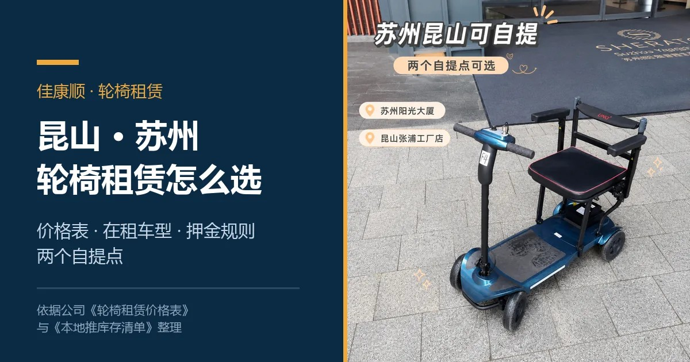
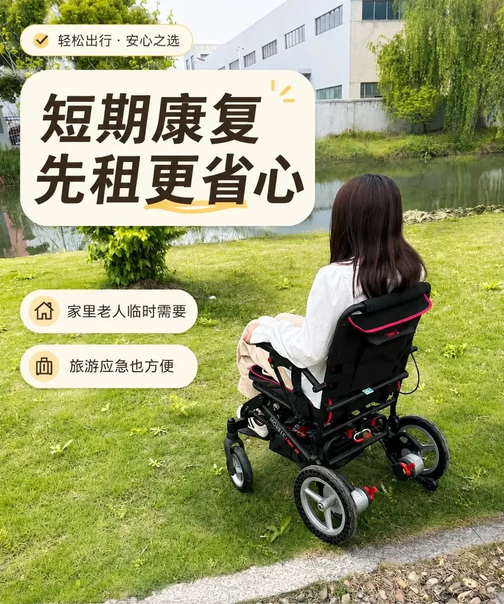
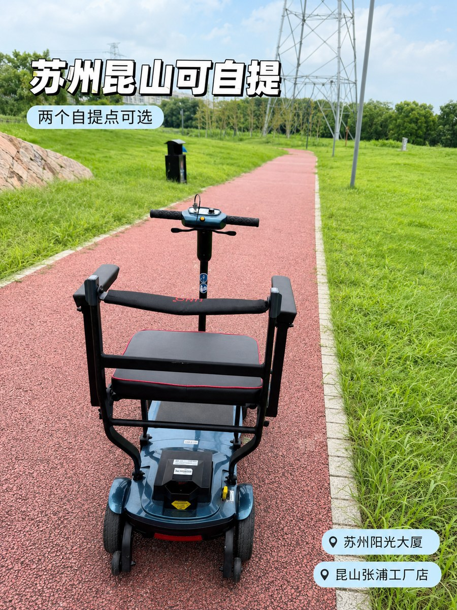
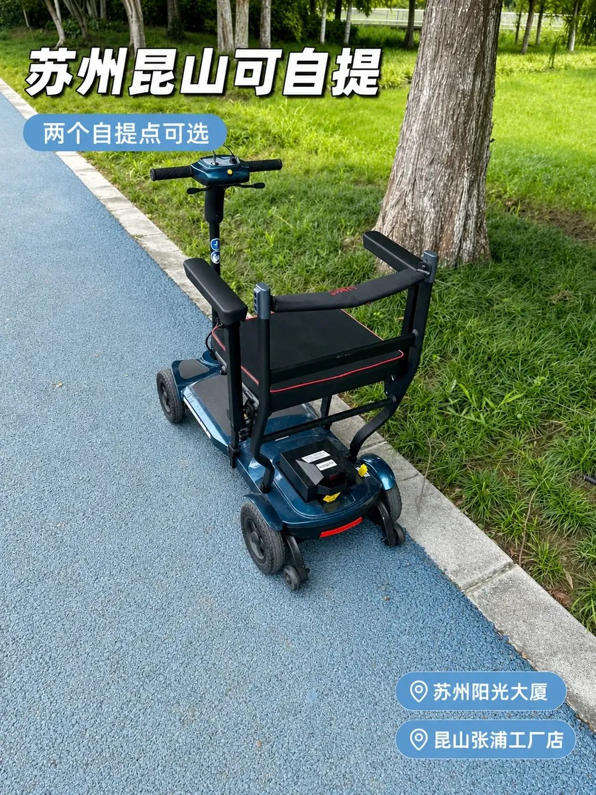
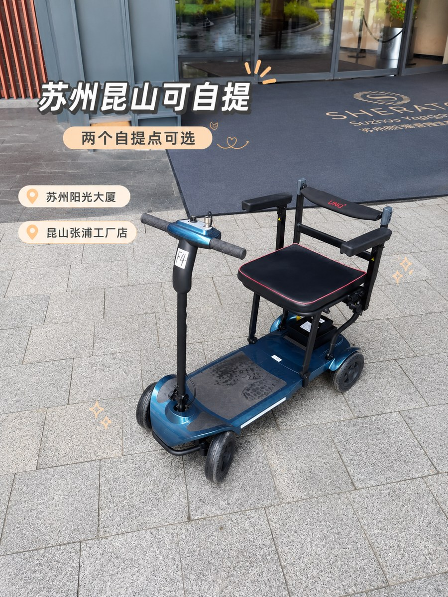

轮椅租赁
在昆山、苏州租轮椅：多少钱、哪些车能租、押金怎么退
昆山、苏州轮椅租赁实用指南：手动轮椅 15 元/天起、电动 50 元/天起，四个档位 14 种租期的完整价格、16 款在租车型库存、押金两档口径，以及签字前该问清的六个问题。

老人膝盖疼，走两百米就要歇；刚做完手术，推着去拍片、换药；外地父母来昆山、苏州住一阵子，想出门转转。真到要用轮椅的时候，很多人的第一反应是“买一台吧”。
买回来才发现，可能只用半个月，家里多占一块地方，转卖还亏一截。
这篇把昆山、苏州能租到的轮椅讲清楚：什么价格、有哪些车、押金怎么退、去哪儿取怎么还。里面的数字都来自公司的价格表和库存清单，你可以拿着这篇去门店对。

价格和押金摘自公司《轮椅租赁价格表》，车型、库存、电池配置摘自 2026 年 5 月 27 日更新的《佳康顺轮椅租赁库存清单》，按车型的日租和两档押金摘自《佳康顺轮椅租赁流程》，核对时点 2026-10-15。库存是动态的，去之前问一句最保险。
先定一件事：你要用几天
租还是买，其实只取决于“用多久”。
- 三五天：出门旅游、陪老人办事、临时陪护。手动轮椅租 3 天 39 元，跟买一台不是一个量级的钱。
- 一到两周：术后早期、短期康复。医院型 7 天 99 元，电动轻便型 7 天 308 元。
- 一个月以上：长期坐卧、要自己出门代步。电动轻便型租满 30 天 750 元，折合 25 元/天，比按天零租划算。
用几天就付几天，用完就还，这是租最省的地方。
一天多少钱：四个档位，14 种租期
价格表把轮椅分成四档：手动三档（飞机轮椅、医院型、重型款），电动一档（轻便型）。车型配置可以在公司官网的电动轮椅产品页上对照。
租期从 1 天到 30 天一共 14 个价，下表单位为元，数值取自价格表原文：
| 租期 | 飞机轮椅（手动） | 医院型（手动） | 重型款（手动） | 轻便型（电动） |
|---|---|---|---|---|
| 1 天 | 15 | 20 | 40 | 50 |
| 2 天 | 28 | 38 | 78 | 98 |
| 3 天 | 39 | 54 | 114 | 144 |
| 4 天 | 48 | 68 | 148 | 188 |
| 5 天 | 55 | 80 | 180 | 230 |
| 6 天 | 60 | 90 | 210 | 270 |
| 7 天 | 64 | 99 | 238 | 308 |
| 8 天 | 68 | 107 | 264 | 344 |
| 9 天 | 72 | 114 | 288 | 378 |
| 10 天 | 75 | 120 | 310 | 410 |
| 15 天 | 102 | 150 | 405 | 525 |
| 20 天 | 132 | 180 | 470 | 610 |
| 25 天 | 165 | 210 | 520 | 682 |
| 30 天 | 198 | 240 | 580 | 750 |
四档在价格表里对应的车型是：
- 飞机轮椅：轻量手推的手动轮椅，主打便携。
- 医院型：以 865-20 为代表的常规手推轮椅。
- 重型款：EY-05、EY500-16，以及移位机 HY201-01A、起身器 H010 四电机。
- 电动轮椅轻便型：P20C、EY-18、EY-15、P15、P10 旅行、EY07、X3 全碳、P11 全碳。
这张表有个规律，看一眼就能记住：
- 前一周降得最快。 飞机轮椅从 1 天的 15 元/天降到 7 天的 9.14 元/天；电动轻便型从 50 元/天降到 44 元/天。
- 一周之后越往后越平。 从 15 天到 30 天，飞机轮椅只从 6.8 元/天走到 6.6 元/天，几乎不动；医院型从 10 元降到 8 元；重型款从 27 元降到 19.33 元；电动轻便型从 35 元降到 25 元，这一档降得最明显。
- 挑台阶看用量。 临时几天就按 6 天以内的价算，一两周看 10 天或 15 天，超过三周直接按 30 天算。
为什么别人报的价比这张表低
公司内部的《佳康顺轮椅租赁流程》里，还有一套按车型的日租：康贝星 18 元/天，希维尔 SYIV100 20 元/天，EY500-16 30 元/天，EY-19 35 元/天，P16 与 EY-18 各 40 元/天，移位机 HY201-01A 与起身器 H010 四电机各 35 元/天。
短租的时候，这套确实更便宜。 比如 EY500-16 一天 30 元，而上面表格里电动轻便型租 1 天是 50 元。
但租久了会反过来。 轻便型租满 15 天折合 35 元/天，已经跟这套报价的 35 元档打平；租到 25 天是 27.28 元/天，比上面任何一款电动都低。移位机、起身器的 35 元/天，也接近重型款租 6 到 7 天的日均。康贝星、希维尔 SYIV100 这两款手动轮椅，跟手动档位价接近或略高。
所以问价的时候，一定要先说明租几天，让门店按对应口径报，比自己猜省事。
另外提醒一句：线上推广文案写的是“手动轮椅 15 元/天起、电动轮椅 40 元/天起”，跟上面两套口径都不完全一致。以门店当天报价为准。
租金之外，还有三笔钱要算
- 押金：价格表口径是手动轮椅 600 元、电动轮椅 2000 元。走闲鱼平台担保交易时更低：手动 300 元、电动 600 元。不走担保则按手动 600 元、电动 2000 元起收，EY-19、P16、EY-18 会到 3000 至 3500 元；移位机与起身器担保 600 元、不担保 2500 元。
- 配送：价格表写的是“10 公里内送货上门 30 元”，但流程文件写的是“不主动推销、不上门送货，客户需到店自提”。两份文件口径不一致，需要送货就先问清楚这个网点送不送。
- 配件：移位机吊带 250 元、起身器床垫 200 元，都是单独买的。
现在有哪些车能租
按 2026 年 5 月 27 日更新的库存清单，在租车型共 16 款：标注充足 5 款、紧张 3 款、缺货 1 款，另有高端款和旗舰款各 1 款，剩下 5 款没标库存状态。
| 型号 | 电池配置 | 库存 | 状态 |
|---|---|---|---|
| 865-20 | / | 40+ 台 | 充足 |
| P15 | 10 锂电 | 20+ 台 | 充足 |
| P20C | 10 锂电 | 20+ 台 | 充足 |
| P10 旅行 | 6 / 10 / 20 锂电 | 10+ 台 | 充足 |
| P16L | 10 锂电 | 20+ 台 | 充足 |
| X3 全碳 | 10 锂电 | 20+ 台 | 高端款 |
| P11 全碳 | 10 锂电 | 10+ 台 | 旗舰款 |
| EY-18 | 10 / 20 锂电 | 7 台 | / |
| EY-19 | 10 锂电 | 5 到 6 台 | / |
| EY-15 | 12 铅酸 / 10 锂电 / 20 锂电 | 4 台 | 紧张 |
| EY07 | 10 锂电 | 3 到 4 台 | 紧张（缺电池） |
| EY500-16 | 12 锂电 | 1 到 2 台 | 紧张 |
| P16 | 10 锂电 | / | / |
| 飞机轮椅（阳光） | / | / | / |
| 小飞机轮椅 | / | / | / |
| EY-05 | / | 没货 | 缺货 |
挑车的时候，盯住这三点就行：
- 电池决定重量和续航。 铅酸更重、更便宜，锂电更轻。EY-15 同时有 12 铅酸、10 锂电、20 锂电三个版本，同一台车选哪种电池，搬上搬下的难度差很多。
- 标“紧张”和“缺货”的要提前问。 EY-15、EY07、EY500-16 库存偏紧，EY-05 已经没货。节假日或者集中用车之前，先确认有没有车。
- 同型号的不同电池版本算同一款车。 P10 旅行有 6、10、20 锂电三种配置，价格按档位走，具体配置要和门店确认。
清单里另有一列表头是“租赁价”，数值从 480 元到 12,800 元。它没写按什么口径计价，没法跟按天的档位价直接比，这篇只按原样引用，不当日租或售价使用。
手动还是电动，看三件事
第一件：用几天。 3 天以内（探亲、旅游应急、临时陪护）手动轮椅就够，优先飞机轮椅档位，3 天 39 元；1 到 2 周（术后早期、短期康复）手动医院型或电动轻便型，医院型 7 天 99 元、电动轻便型 7 天 308 元；1 个月以上（长期坐卧、要独立代步）看电动轻便型，30 天 750 元。
第二件：谁用，要不要自己开。 家里有人推、只要一个代步位置，手动轮椅性价比最高。老人要自己操控、独自出门，选电动轮椅：P16L 是铝合金超轻折叠款，折起来能像行李箱一样提拎，扶手管上印着 U-LITE 系列标识。
第三件：有没有特殊场景。
- 要带上飞机或高铁：手动轮椅看“飞机轮椅”档位。电动款可以问 P16L，它的定位就是可上飞机，电池可拆卸单独充电，后轮电机旁有离合切换杆，断电时能切回手动推行。电动轮椅的锂电池属于航空运输限制物品，中国民用航空局对旅客携带锂电池类物品有专门规定，其中公开的《关于民航旅客携带“充电宝”乘机规定的公告》针对的是充电宝一类物品，轮椅电池能不能随身或托运，出行前先向所乘航司确认。高铁这边，中国铁路 12306 的随身携带品说明写明，依靠辅助器具才能行动的重点旅客代步的折叠式轮椅可以免费携带，并且不计入随身行李的重量和体积范围。
- 体型偏大，或者需要更大承重：看手动重型款（40 元/天起），或者问 865-20 这类常规车型。
- 需要把人从床上挪到轮椅上：用重型款档位下的移位机 HY201-01A、起身器 H010 四电机，吊带和床垫要单独买，这类需求建议单独咨询。

签字之前，把这五条看清
租轮椅要签《轮椅租赁协议》，条款里有五处值得先看，其中四处直接和钱有关：
- 押金。 价格表口径是手动 600 元、电动 2000 元。租金和押金在签订时一次性付清，可以现金、微信、支付宝或转账。
- 押金退还。 归还并验收合格后无息退还，具体几个工作日，在协议上当场填清楚。
- 逾期。 协议约定逾期按日租金的 1.5 倍计费。行程可能延长，提前说一声比事后补便宜。
- 车况和配件。 现场验货确认车况（协议分全新、九成新、八成新三档）。按说明书使用，不得超载、载货、竞技，损坏或丢失按价赔偿。可选配件有坐垫、靠背垫、安全带、防倾轮、餐桌板。
- 责任与争议。 协议约定使用中的人身安全风险由承租方承担，出租方保证轮椅是合格医疗器械；协商不成由出租方所在地法院管辖。这条跟钱无关，但值得看一遍。
签之前把租金总额、押金金额、退还天数、归还地址四栏当场填好，免得还车时对不上。租赁与使用受《医疗器械监督管理条例》约束。
怎么下单，去哪儿取车
公司的租赁流程文件写明，业务尽量走闲鱼平台的担保交易；也可以直接到店，现场验车、现场签协议。
两种方式都要付租金和押金，差别在押金高低：走担保交易时手动轮椅 300 元、电动轮椅 600 元；不走担保则按 600 元与 2000 元起收。
流程文件同时写明不主动推销、不上门送货。需要配送的话，先和门店谈。
取车有两个网点：
- 昆山张浦工厂店：在昆山张浦，公司的办公地址是张浦镇俱巷路 625 号二楼。资料里没有单独登记这个提车点的门牌，去之前先问清路线。
- 苏州阳光大厦：在苏州，资料里只登记了大厦名称，没有门牌，具体位置和取车方式以门店说明为准。
- 卫生：流程要求按设备清洁度分级处理，普通轮椅用酒精擦拭；接触卧床病人的移位机、起身器等配件，原则上销售给客户、不再回收。对外图文里的说法是每台回收后清洁消杀。


租之前，照着问一遍
这六个问题问完，基本不会有意外：
- 我要租几天？ 让门店按对应租期报总价。
- 按哪套价结算？ 档位价还是按车型的日租价。
- 押金多少？走不走担保交易？ 两档差得不小。
- 有没有配送？多少钱？ 两份文件口径不一致，必须问。
- 还车还到哪里、几点之前？ 逾期按日租金 1.5 倍算。
- 车况几成新？刹车灵不灵？ 现场推两步试一下刹车，有问题当场换车。
常见问题
租一个月多少钱？
按价格表：飞机轮椅 30 天 198 元，医院型 240 元，重型款 580 元，电动轮椅轻便型 750 元。用满 30 天可以续租，也可以按更长周期再谈。
需要押金吗？什么时候退？
需要。价格表口径是手动 600 元、电动 2000 元；走闲鱼担保交易时更低（手动 300 元、电动 600 元）。租金和押金在签协议时一次性付清，归还验收合格后，在协议约定的工作日内无息退还。
可以送货上门吗？
价格表标注 10 公里内 30 元，内部流程文件写的是不上门送货、需到店自提。要送货就下单前问清楚。
轮椅干净吗？
流程写明的常规做法是用酒精擦拭；接触卧床病人的移位机、起身器等配件原则上不回收，作为商品销售。回收后清洁消杀是公司对外图文的说法，具体到某台车可以到店看。
可以带上飞机或高铁吗？
手动轮椅里的“飞机轮椅”档位就是为便携设计的。电动款可以问 P16L，铝合金超轻折叠，定位为可上飞机，但电池要符合民航关于随身携带锂电池类物品的规定，以航司规定为准。高铁上折叠式轮椅可以免费携带，不计入随身行李范围。
找谁租
昆山佳康顺医疗器械有限公司成立于 2012 年，办公地址在昆山市张浦镇俱巷路 625 号二楼，是福宏康复集团老人用品在中国市场的销售总代理。生产主体昆山福宏康复科技有限公司隶属该集团，集团 2007 年创立。
产品线以电动轮椅和移位机为主，也有手动轮椅、老年代步车、助行器和护理床。公司官网是 unqcare.com，关于我们页有公司简介和营销网络，昆山和苏州两个本地页可以先看车型和联络方式，再约时间到店。
这篇由佳康顺轮椅租赁团队整理，数字都对着公司租赁业务的原始文档核过。文档更新，或者写的跟门店当天口径不一致时，我们会改；你发现哪里跟门店对不上，可以在官网联系页留言。
资料来源
这篇数字来自公司以下原始文档，原件可向门店索取，核对时点 2026-10-15：
- 《轮椅租赁价格表》：四个档位的日租价、押金标准、送货上门费用、车型归属。
- 《佳康顺轮椅租赁库存清单》，2026 年 5 月 27 日更新：16 款在租车型、库存数量、电池配置、表头为“租赁价”的一列数值与库存状态。
- 《佳康顺轮椅租赁流程》，2026 年 5 月 6 日：按车型的日租、担保与不担保两档押金、配件单卖价格、清洁消杀分级要求、下单方式。
- 《昆山佳康顺医疗器械有限公司租赁轮椅的协议》：押金退还、逾期计费、车况分档与可选配件。
- 《P16L 可上飞机款电动轮椅 · 参数与卖点》：P16L 的定位、材质、折叠方式与可拆卸电池。
- 公司主体与集团背景：成立时间、办公地址、销售总代理定位、生产方与产品线。
说明：线上推广文案里还有“无需押金”“最快 2 小时送达”“全城配送、上门取还”“好评 99.2%”等说法，公司官网文案另有“十七年匠心专注”。这些跟《轮椅租赁价格表》《佳康顺轮椅租赁库存清单》《佳康顺轮椅租赁流程》的口径不一致，也没有可核对的出处，这篇没有采用。库存是在租车型的动态数据，文中给出的是核对时点那份清单的数字。